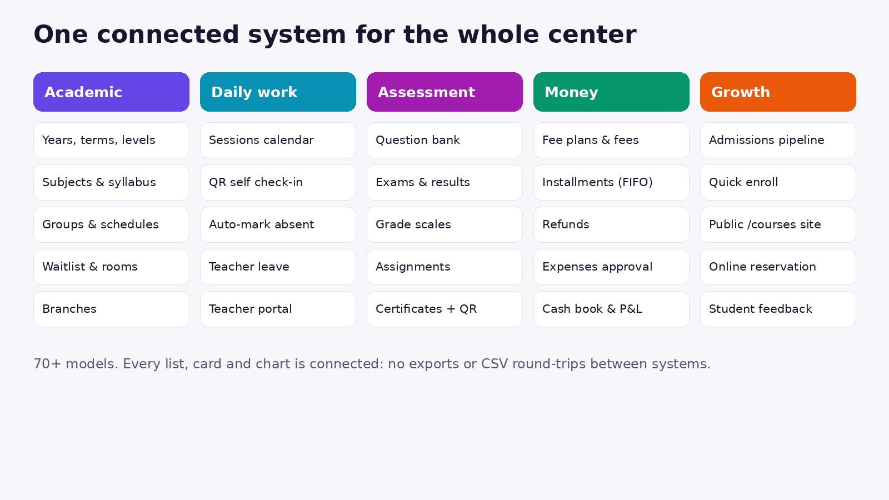
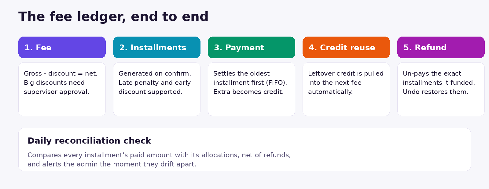
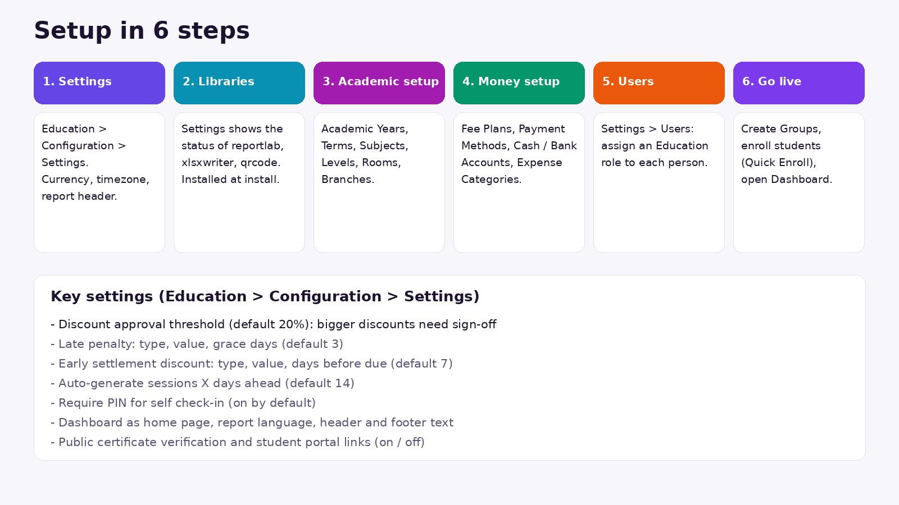
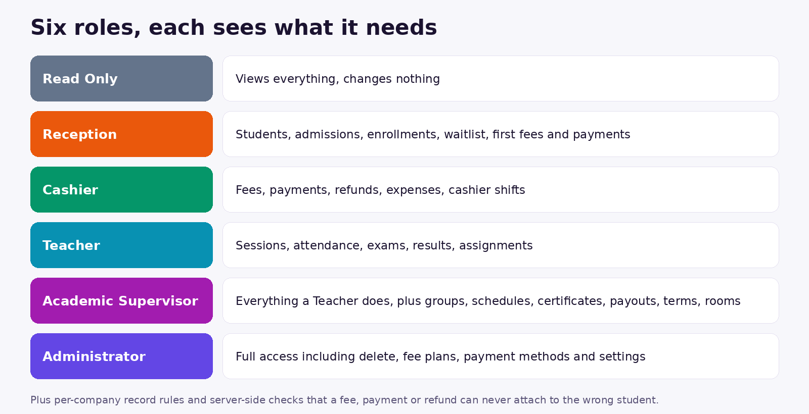

A complete, standalone education-center operating system for Odoo 19 — students, sessions, exams, fees, and money handled with the same discipline as a real accounting ledger. No Accounting, HR, or third-party education modules required.
The ledger, end to end
Twelve areas, one connected data model — no exports, no CSV round-trips between systems.
Illustrative previews of two of the newer screens — actual styling follows your Odoo theme.
Private-lesson centers, tutoring academies, language and training institutes, and small schools that run groups with weekly schedules, collect fees in installments and need to know at any moment who attended, who paid and what is owed. It replaces the mix of spreadsheets, attendance sheets and cash notebooks with one system, and it does not need the Odoo Accounting, HR or Payroll apps.


Setup takes under an hour for a typical center. Everything lives under the Prime Educational Hub app; the Configuration menu and Settings screen are for Administrators.

Open Configuration > Settings and review the options below.
| Setting | What it does |
|---|---|
| Default Academic Year / Fee Currency / Payment Method / Cash Account | Defaults used when creating groups, fees, payments, expenses and refunds. |
| School's Timezone | Group schedule times (for example 2:30 PM) are always read in this timezone. |
| Auto-Generate Sessions X Days Ahead | A daily job creates upcoming sessions from each group's weekly schedule. Default: 14 days. |
| Require PIN for Self Check-in | Students scanning the session QR must enter their PIN. On by default. |
| Default Attendance Status / Exclude Excused Absences | Controls the default mark and whether excused absences count in attendance %. |
| Default Exam Tie-Break Rule | How ranks are assigned when students have equal scores. |
| Default Discount Policy and Value | Pre-fills the discount on new fees. |
| Discount Approval Threshold (%) | Discounts at or above this percentage need supervisor approval. Default: 20%. |
| Late Penalty (type, value, grace days) | Applied automatically by a daily job after the grace period. Default grace: 3 days. |
| Early Settlement Discount (type, value, days before due) | Granted when an installment is paid early. Default window: 7 days. |
| Report Language, Header Name, Footer Text | Applied to every generated PDF report. |
| Enable Public Certificate Verification / Student Portal Links | Switch the public pages on or off. Both on by default. |
| Dashboard as Home Page | Users with an Education role land on the dashboard after login. |
| Required Libraries Status | Shows whether reportlab, xlsxwriter and qrcode are installed. |
PDF and Excel reports need reportlab and xlsxwriter, and QR attendance needs qrcode. The module tries to install any missing one with pip when you install or upgrade it, and never blocks the installation if the server has no internet. If a library is reported missing in Settings, install it in the Python environment that runs Odoo and restart the service.
Create the structure under Academics > Setup: Academic Years, Terms, Subjects, Levels, Syllabus Topics, Rooms and Branches. Add Holidays under Configuration so sessions are not generated on those days.
Under Fees & Accounting, create your Fee Plans (installment schedules), check the Payment Methods and Cash / Bank Accounts (Main Cash Drawer and Main Bank Account are created for you), and add Expense Categories. Pipeline Stages for admissions come ready: New, Contacted, Trial Scheduled, Enrolled, Lost.
In Settings > Users, give each person one Prime Educational Hub role (see the next section). Link teachers to their user so they can use the teacher portal.

| Area | Read Only | Reception | Cashier | Teacher | Supervisor | Admin |
|---|---|---|---|---|---|---|
| View all data | Yes | Yes | Yes | Yes | Yes | Yes |
| Students, guardians | View | Create, edit | Edit | Edit | Edit | Full |
| Admissions (leads), waitlist | View | Create, edit | View | View | Full | Full |
| Enrollments | View | Create, edit | Create, edit | View | Edit | Full |
| Fees, payments | View | Create, edit | Create, edit | View | View | Full |
| Refunds | View | View | Create, edit | View | View | Full |
| Expenses | View | View | Create, edit | View | Create, edit | Full |
| Sessions, attendance, exams, results | View | Quick check-in, cancel session | View | Create, edit | Full | Full |
| Groups, schedules, rooms, terms | View | View | View | View groups; edit groups | Create, edit | Full |
| Certificates, teacher payouts | View | View | View | View | Create, edit | Full |
| Fee plans, payment methods, settings | View | View | View | View | View | Full |
Roles build on each other: Supervisor includes Teacher, and Administrator includes Supervisor and Cashier. Every model has a multi-company record rule, and the server refuses to attach a fee, payment or refund to the wrong student.
| Page | Who uses it | Notes |
|---|---|---|
| Session QR check-in (/education/attendance) | Students | Public, PIN-protected, rate-limited, Arabic and English responses. |
| Student portal link | Students and guardians | Token-based: grades, attendance and fee status. No account needed. Can be switched off in Settings. |
| Guardian pages (/education/my/children) | Guardians with a login | See every linked child from one place. |
| Teacher portal (/education/teacher/portal) | Teachers with a login | Upcoming sessions, payouts and leave requests. |
| Certificate verification | Anyone | Scan the QR on a certificate to confirm it is genuine. Can be switched off in Settings. |
| Public courses site (/courses) | Prospective students | Course catalog, booking request and online reservation payment through Odoo's payment providers. Does not require the Website app. |
Collection, Outstanding Fees, Aging, Cashier Daily Closing, Fee Ledger Reconciliation, Student Financial Audit (a full timeline for resolving disputes), Student Report Card, Income Statement (P&L), Cash Book, Expense and Student Feedback, with PDF and Excel export. PDFs are built with ReportLab in Arabic or English and do not depend on wkhtmltopdf.
Mark overdue installments, apply late penalties, auto-generate upcoming sessions, notify upcoming exams and sessions, auto-mark absent after the attendance window (every 15 minutes), refresh room status (every 5 minutes), refresh teacher-leave warnings, purge old public access logs and run the daily fee ledger reconciliation.
Do I need the Odoo Accounting app? No. The module has its own cash and bank accounts, expenses, Cash Book and P&L.
A report or QR code does not work. Check Required Libraries Status in Settings and install any missing library on the server.
Sessions are missing for a date. Open the Sessions Calendar: due sessions are generated automatically from the group schedule. Check the school timezone and holidays too.
Can guardians see their children's data? Yes, through the student link or their login. Turn the links off in Settings if you prefer not to use them.
Bug-fix updates are included. Installation, configuration and customization support: Eng. M.Aboelmagde (YouTube: Odoo Lab, @odoolab).
Built by Eng. M.Aboelmagde · OdooLab